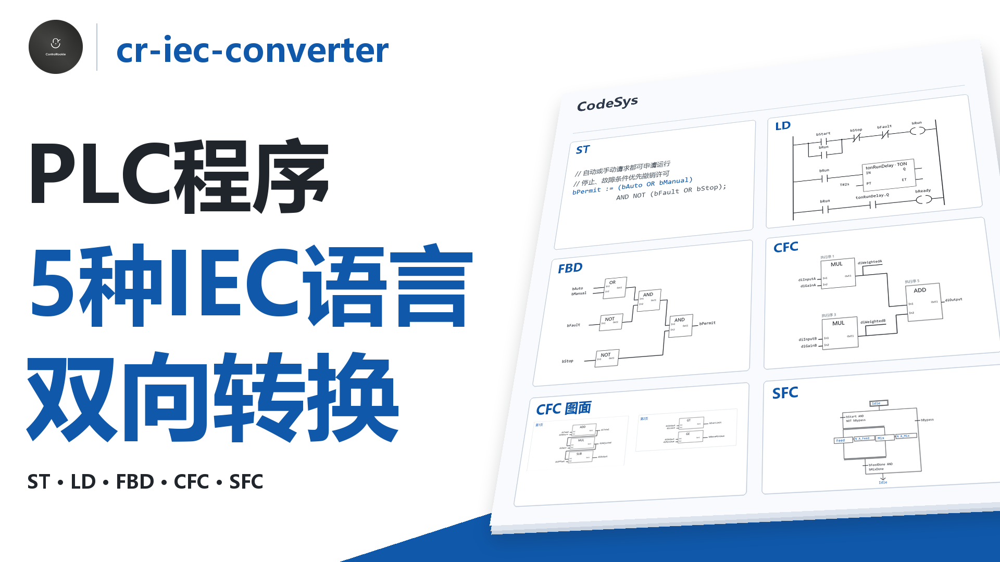
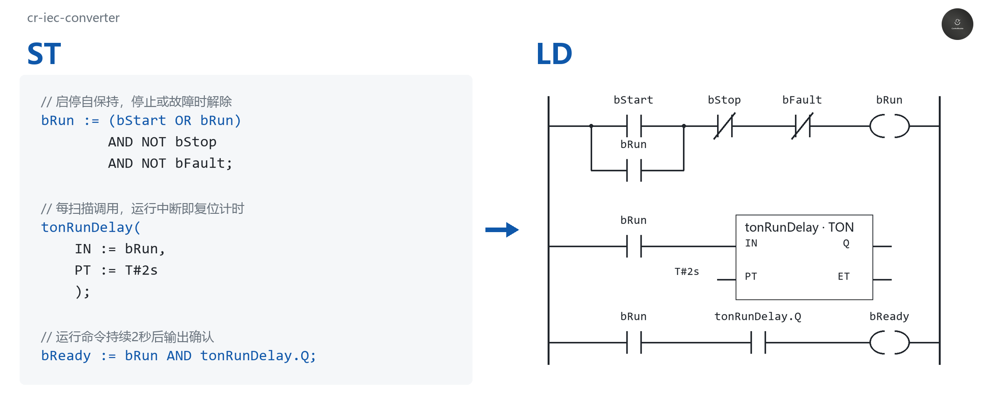
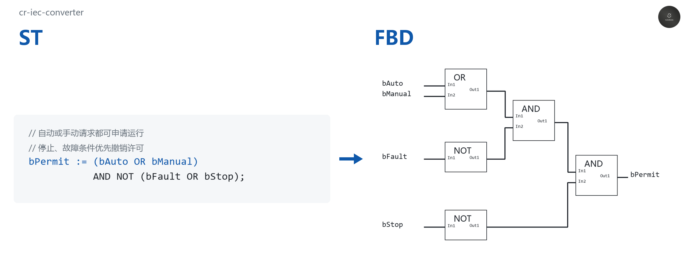
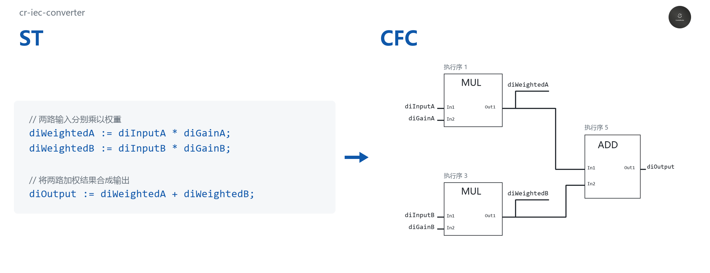
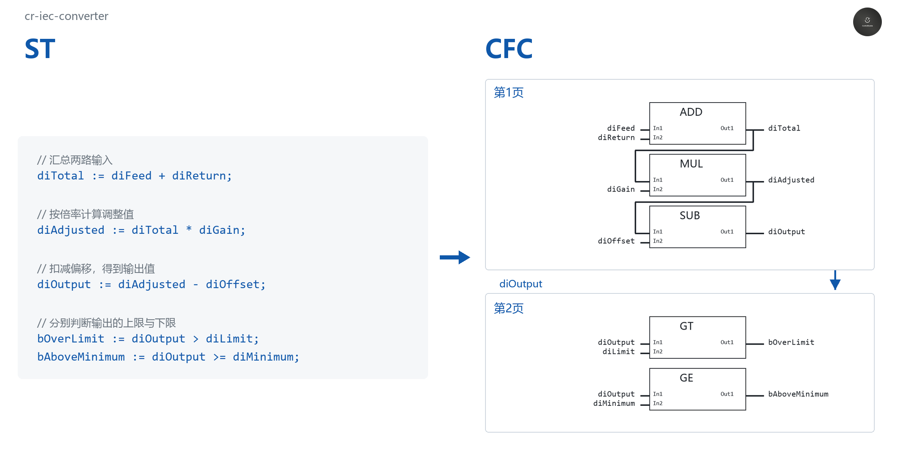
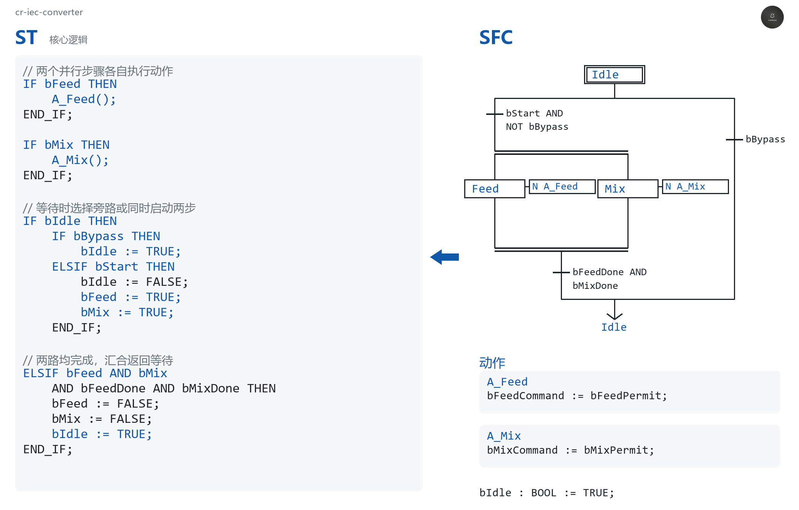

说来惭愧，我自己十多年的自动化经验，从接触自动化第一天就使用ST / SCL，到今天依然不会写梯形图，不管什么情况、什么场景，我的“唯一、不是第一”编程语言只有ST / SCL……虽然十多年来，我始终要求我的团队成员必须尽量使用ST / SCL，AI时代更是应该毫无疑问地坚定这一点，但这仅仅只能是一部分人的选择，不能说明其他图形化语言的市场和竞争力！所以经常看到一堆工程师针对“到底ST好还是图形编程语言好”争得面红耳赤，其实大可不必！
不同的自动化工程师都有自己习惯的编程语言、不同的行业有各自习惯主流的编程语言、不同业主和客户也往往有明确的编程语言要求。自己习惯用ST，项目却要求梯形图；已有程序用CFC写成，这次又需要换成另一种表达，这些都是自动化工程师在实际项目过程中避不开、深恶痛绝的翻译和重写的工作。重写时，条件要拆，变量要对应，功能块要重新放置和接线，计算与调用的先后也要核对。程序越多，这部分重复劳动越明显。
纵然万般不合理、不情愿，甲方市场下这就是事实，不接受也得接受！
cr-iec-converter因该是目前你能看到的基于CodeSys平台进行各类语言转换能力最强、覆盖面最广的工具，没有之一！它的出发点就是希望工程师能够从重写、翻译、转换程序的工作中解脱出来，让AI更高效地按项目要求转换程序，把工程师的时间留给核心工艺和设备。
程序转换与批量处理
cr-iec-converter面向CodeSys平台，支持IEC 61131-3中的ST、LD、FBD、CFC和SFC的双向转换，支持各类POU。两端条件满足时，可以在受支持的语言之间转换，保留相应的变量声明、参数和调用关系。
提供源程序或受支持的工程导出文件，指定目标语言，即可得到对应的ST或图形程序交换文件及转换说明。结果可用于后续导入工程和编辑。支持单个文件，也支持按同一方向批量处理目录中的相应程序文件，并按原相对目录组织输出；受支持的工程读取入口还可以选择程序对象。
它以AI技能方式使用。你可以直接提出“把这些程序转换成梯形图，按纯图形要求处理，保留原变量命名”等任务，由技能调用工具完成转换并说明结果。
程序内容的处理
当前支持范围包括以下内容，各语言的具体功能在后面分别列出：
- 数据类型与初值：BOOL、整数、实数、位串、时间、字符串、枚举、结构体、数组，以及相关初值和类型转换。
- 工程变量：局部变量、全局变量访问、映射I/O、RETAIN变量和程序注释。
- 函数与功能块参数：自定义块和库块的条件调用、参数计算、输入输出及IN_OUT；结构体和数组参数按支持的类型与传参方式处理。
- 短路判断：AND_THEN、OR_ELSE保留原来的判断顺序，前面条件已决定结果时，后面的调用不额外执行。
- 扫描顺序：保留同一扫描中的调用和赋值先后，以及先读取旧值、再更新变量的关系。
下面用五组案例作左右对照。左边为ST程序或核心逻辑示意，右边为对应图形，箭头表示本例转换方向，具体功能覆盖分别列在各节中。
LD：触点、支路与控制流程
支持以下逻辑关系和程序结构：
- 触点关系：串联、并联、常闭取反，以及多层串并联条件。
- 线圈和联锁：普通输出、自保持、启停联锁，以及条件置位、复位的已支持写法。
- IF判断：IF、IF/ELSE、IF/ELSIF/ELSE和已覆盖的嵌套判断；没有ELSE时保留原值。
- CASE选择：已支持的多路选择和默认分支，保留各分支的执行条件与赋值关系。
- 运算与比较：变量赋值、算术、比较、中间结果，以及相关组合表达式。
- 函数与FB调用：标准、自定义和库功能块的实例调用，包括条件调用、输入参数计算、输出赋值及IN_OUT。
- 数值极值：已覆盖SINT、USINT、INT、UINT、DINT、UDINT、LINT、ULINT、REAL、LREAL的同型多输入MIN、MAX。
- 位移处理：已覆盖BYTE、WORD、DWORD、LWORD的SHL、SHR、ROL、ROR指定调用形式，保留相应位宽。
- FOR循环：已支持的DINT固定和动态边界、正负步长，以及有限常量范围的INT循环；包括相应空循环和嵌套用法。
- 其他循环控制：已支持的WHILE、REPEAT、EXIT、CONTINUE及提前RETURN，不擅自改成跨多个扫描周期执行。
- 数组遍历：除了已支持的普通数组访问，还有按LOWER_BOUND、UPPER_BOUND遍历ARRAY[*]开数组的相应写法，循环维度和下标需要对应。
- 已有梯形图转ST：读取支持的梯级和调用，保留变量、赋值和执行关系。

转换后可以沿梯级检查条件和输出，减少手工拆条件、搭支路、放置功能块和对应变量的工作。
FBD：条件与数据连接网络
支持以下网络、运算和调用：
- 基本逻辑：BOOL赋值、AND、OR、XOR、NOT、相等与不等、嵌套条件、自保持和多输出。
- 组合条件取反：按判断层次连接，例如OR之后再取反，条件来源可以顺着连接查看。
- 条件分支：已覆盖二选一、IF/ELSIF、无ELSE、嵌套，以及分支内多次赋值和置位复位。
- 选择块：适合直接选择数值的条件可用SEL表达；多路选择有相应MUX支持。
- CASE：已覆盖数值项、范围项、状态选择和无ELSE保持等情况。
- 运算和数据：MOVE、算术、比较、MIN、MAX、LIMIT、ABS，以及已覆盖的位运算、移位、TIME、类型转换、结构体与数组访问。
- 字符串函数：已有CONCAT、LEN、LEFT、RIGHT、MID、FIND、DELETE、INSERT、REPLACE等相应调用支持，按各函数的参数类型和长度处理。
- 函数与FB调用：自定义与库调用、条件调用、参数计算和输出赋值；常用标准块包括定时器、边沿检测、计数器和置位复位块。
- 控制流程：已有FOR、WHILE、REPEAT、EXIT、CONTINUE、RETURN的相应支持，按实际需要保留条件执行和流程连接。
- 已有FBD转ST：保留网络内的变量、调用和执行关系。

输入、运算、调用和输出按网络连接，工程师可以顺着引脚检查信号来源，减少逐块放置和重新接线的工作。
CFC：连续计算、分支与反馈
支持以下数据连接和执行关系：
- 连续计算：已支持的本地DINT计算链，前一级结果可以直接连接后一级。
- 多路汇总：多条计算支路接到同一后续块，各路输入和结果来源保持对应。
- 中间结果：结果既可以送给下游，也可以写入命名变量，方便调试和后续使用。
- 条件和控制：支持相应IF/ELSIF/ELSE、CASE、选择运算及固定、递减、动态和嵌套FOR、WHILE、REPEAT、EXIT、CONTINUE、RETURN，保留执行关系。
- 函数与FB调用：处理支持的自定义和库调用，保留参数类型、输入输出和调用条件。
- 重复赋值：同一扫描里多次修改一个变量，保留各次赋值和读取的先后。
- 反馈与保持：已覆盖反馈程序保留必要变量，区分上次保存值和本次计算结果。
- 块与连接排列：结合前后连接、块尺寸和分支位置安排图面，保留执行编号与连线。
- 已有CFC转ST：保留支持图形中的变量、连接和执行先后。

连续计算沿连线查看，中间结果留作调试观察，反馈按原来的顺序执行，减少重新整理计算链和中间变量的工作。
CFC的画幅与图面组织还支持以下操作。CodeSys提供连续画幅和按页组织的编辑形式，两者都属于CFC：
- 图面分配：按页面容量安排内容，简单程序可只占一页，内容增加后再使用后续页面。
- 图面数量：可以明确指定多页，与自动分配分别使用。
- 页内接线：已支持的本地DINT、BOOL连续计算可直接连接，同时保留需要观察的变量。
- 跨页变量：前页写入、后页读取同一变量，保留类型、页归属和先算后用的顺序。
- 跨页接线：已有相应图形连接的处理，已核对图形中包括未命名连接点的衔接方式。
- 页面组织：相关块与输入尽量成组，页名和说明依据实际逻辑与输出确定，页面先后与执行关系对应。
- 已有页面整理与转ST：原图关系和执行方式明确时，可按支持条件增页、删空页、移动已有组、拆页、合页和重新分配图面；支持已有多页程序转ST。

图中两页通过同名变量衔接。转换时处理页面分配、页内接线和执行先后，减少手工搬块、补接关系和整理页序的工作。
SFC：步骤、转移与动作
状态程序生成SFC与已有SFC转ST，分别支持以下内容：
- 状态程序生成步骤图：符合条件、由当前程序管理状态的CASE程序，可以转换为步骤、转移与动作。
- 步骤名称：数字状态保留原值，枚举状态可以采用等待、运行、完成等对应名称，并保留类型与数值。
- 初始化与保持：已有初始状态、无ELSE保持和空动作等相应处理。
- 转移与返回：下一步明确时生成相应路径；可直接表达的工艺条件放在转移位置，实际返回和已支持默认处理也会保留。
- 公共逻辑：CASE前后每扫描执行的公共程序，保持原先后和执行次数，不改成仅进入步骤时执行一次。
- 步骤动作：可以采用SFC主流程配合ST Action的混合方式；已有图中的受支持图形动作、条件按相应方向处理。
- 已有选择分支转ST：已有选择、汇合，以及多个条件同时成立时相应执行关系的支持。
- 已有并行分支转ST：已有并行、汇合及与选择组合的相应用法，尚未完成的并行步骤继续保持。
- 动作与时间：N、S、P、R、共享动作，以及SD、DS、SL、步骤状态和步骤时间等有相应支持，具体限定符与组合分别使用。
- 控制与条件程序：初始化、复位、暂停、超时及转移条件程序已有相应处理，保留已支持的条件判断与变量变化。

这组对照选用等待、送料、搅拌三个步骤。左侧的ST核心逻辑与右侧逐项对应：等待时选择执行或旁路，执行时同时进入送料和搅拌，两步分别执行A_Feed、A_Mix，两路完成后汇合返回。变量和动作按ST Expert规范命名。为便于阅读，左侧依据实际转换结果整理为流程示意，省略扫描管理和动作收尾代码，不是完整转换输出。
混合编程与原图恢复
可以按项目要求选择纯图形或混合编程。混合编程保留必要的ST动作、方法等内容，并在结果中说明。涉及方法、属性等程序成员时，需要使用能够保留这些内容的工程文件格式。
原图资料、变量声明和对应关系完整时，可以按条件恢复已有图形；没有原图资料时，则根据程序重新生成图面。
使用条件
- 平台范围：当前面向CodeSys受支持的源文件和导出格式，不是任意厂商PLC工程通用互转，也不自动搬运设备、任务与通信配置。
- 两端条件：源程序要能完整读取，目标语言也要支持相应写法。不同转换方向的支持范围分别判断。
- 外部调用：需要明确参数名称、类型、方向以及目标库。缺少声明、类型不匹配或未知方法，不能凭块名推断；转换库调用时，目标工程继续使用相应库。
- 循环边界：DINT动态循环与INT有限常量循环的范围不同。固定零步长、结束后计数溢出、循环体或参数调用改写计数器等写法仍有限制。
- 数组与引用：下标可能越界、未知指针和复杂引用关系不作通用支持；已有本地DINT引用转换需明确选择并保留对应资料，不能推广到任意公开引用和地址用法。
- 纯图形与成员：保留ST动作或方法的结果属于混合编程；任意继承、接口和动态调用，并不都能完整转换为图形。
- CFC执行方式：新生成的CFC需按说明落实目标对象的显式执行顺序。原图恢复则保留有依据的原执行方式，不能只凭图上位置猜顺序。
- 画幅与图面：纸张和单块尺寸有限；当前不承诺自动生成带名称的跨页来源、去向标记。本文示例采用同名变量跨页传值。
- SFC边界：普通顺序计算、多个独立CASE或外部随意改写的状态不能直接当作完整步序。已有选择、并行图可读取，不等于任意ST都能生成同样的流程；任意异常恢复、动作组合和所有IDE版本也不作通用承诺。SFC方向目前不提供其他图形方向的外部接口声明和本地DINT引用转换选项。
- 工程确认：转换后仍需在目标工程核对库、编译和运行。恢复原图需保留相应原资料，不能保证任意修改之后还原作者的全部排版。本文配图依据实际转换结果整理，SFC左侧为提炼后的核心逻辑示意；配图不是IDE截图，也不代替运行验证。
cr-iec-converter会持续迭代，继续补充转换能力和新的功能。 项目里需要哪两种语言之间的转换，遇到了哪些特殊写法，都欢迎留言交流。
最好说明源语言、目标语言、是否要求纯图形，并提供脱敏的小案例。我会结合大家的实际需求，争取把真正有价值的功能都实现掉。
想进一步了解cr-iec-converter的功能和实际转换效果，欢迎关注我的B站和微信公众号。后续我会录制专门的演示视频，结合具体程序，把工具能做什么、怎么使用、转换效果如何，展示给大家。
评论区预留
这里先保留评论和回复结构，不接入第三方服务。后续统一决定登录、匿名、审核、反垃圾和静态站兼容策略。